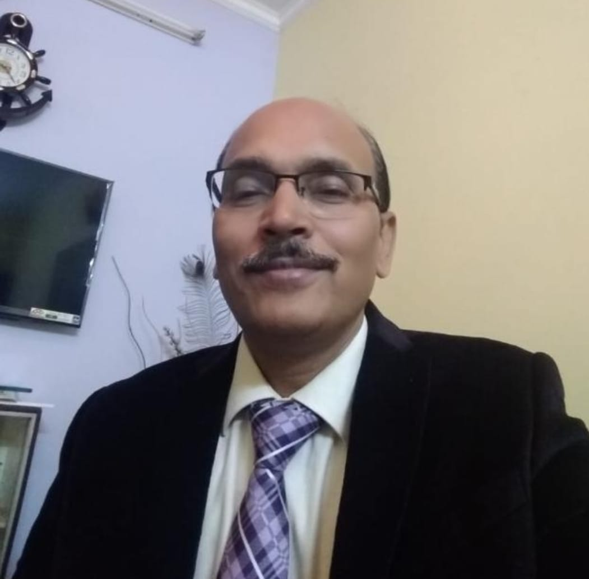
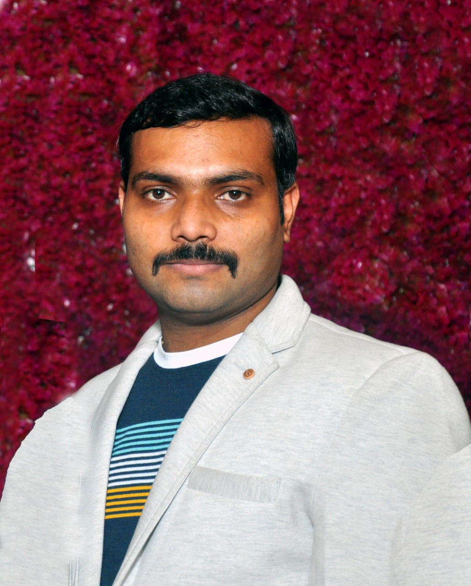

An Initiative of
Ministry of Education
Under the National Mission on Education through ICT

Pandemic situation arose due to COVID-19 affected every sphere of human life including education domain. Every section like school education, higher education, research work, etc. faced challenges in providing services to the society. Due to the ability to convert challenges into opportunities, human beings took the responsibility of providing solutions for unforeseen problems, this time too.
A virtual laboratory is a tool for distance learning and/or experimentation that allows people to share knowledge, data, voice, video, tools, and many other resources.
It provides a suitable environment to extend, improve, integrate, refine, and assist the learning and/or experimentation process of many subjects, thus contributing to an increase of the effectiveness of scientific research and widening the use of scarce or costly equipments. The diversity of models and structures for virtual laboratories is large and varies according to the nature of the project under investigation, the goals, and the technologies involved.
Although various tools and platforms were explored for imparting theoretical knowledge to students, the practicals aspect is still not that much explored as needed. Due to lock-downs the laboratories were not accessible for teachers and students which created an unavoidable gap in acquiring knowledge. To fill this gap we have developed a this portal consisting simulation based virtual experiments.
☀ These virtual experiments are developed as per the curriculum of UGC/AICTE.
☀ Students can perform experiments virtually through desktop as well as smartphones in anytime anywhere learning mode.
☀ Virtual experiments are embedded with self learning material like theory, procedure, pre test, post test, videos, references, etc.
☀ Step wise instructions in audio-visual format are provided for performing experiments as guided enquiry strategy.
☀ To provide remote-access to simulation-based Labs in various disciplines of Science and Engineering.
☀ To enthuse students to conduct experiments by arousing their curiosity. This would help them in learning basic and advanced concepts through remote experimentation.
☀ To provide a complete Learning Management System around the Virtual Labs where the students/ teachers can avail the various tools for learning, including additional web-resources, video-lectures, animated demonstrations and self-evaluation.

Inspiration & Guidence
Dr. R.S. jadon Professor
Head of Department
MITS.

Project Mentor
Naveen Parmar
Virtuality india.

Designed By
Abhishek Chaturvedi
Madhav institute Of
Technology and Science.
Gwalior (M.P.)